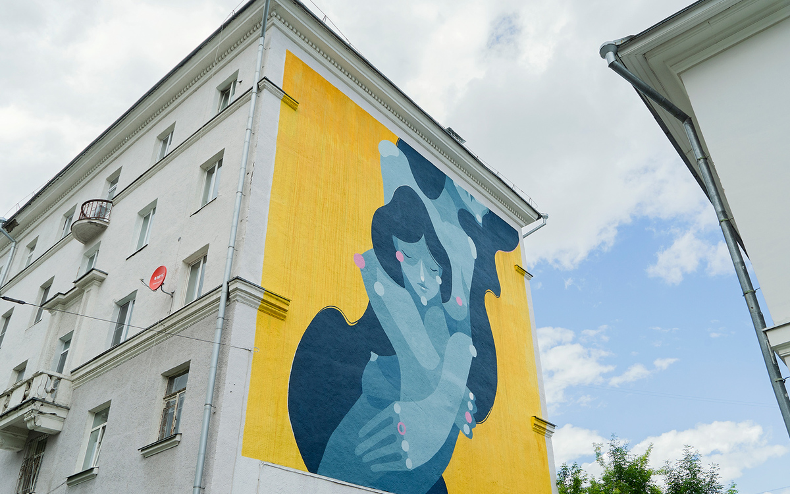

Amor

Автор: Zesar
Адрес: переулок Химиков, 4
Год создания: 2019
«Человеку нужен человек» — эта фраза из фильма Андрея Тарковского «Солярис» точно отражает суть работы испанского художника Zesar. На фасаде здания в самом центре Екатеринбурга он изобразил двух обнимающихся женщин. Вид на мурал открывается с набережной Городского пруда.
Рисунок символизирует дружбу, любовь, понимание и единение — все то, что составляет основу человеческих отношений. Художник часто обращается к теме взаимодействия людей друг с другом и с окружающим миром, и эта работа стала ярким воплощением его размышлений.
Особое внимание привлекает цветовое решение: насыщенные, живые краски выбраны не случайно. С их помощью Zesar акцентирует внимание на позитивных моментах. По словам автора, такой подход был особенно важен для него в период жизни в Уругвае — стране, где ему остро не хватало цвета. Так мурал стал не только напоминанием о ценности близких, но и гимном яркости, которая так нужна в повседневной жизни.